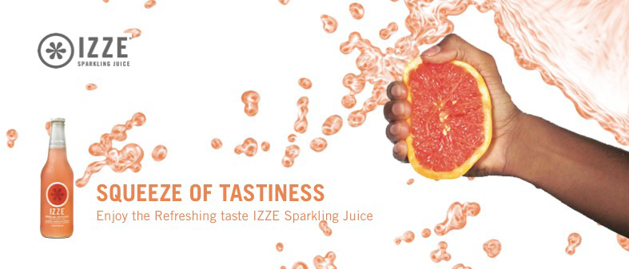
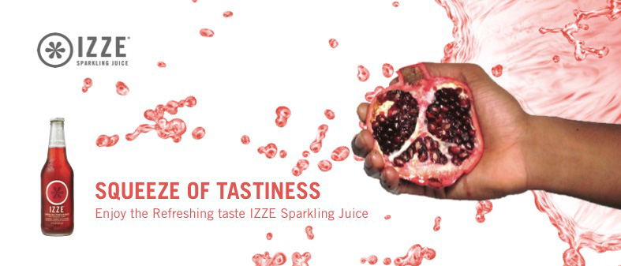

NICHOLE VEIRO DESIGN
VISUAL.CREATIVE.THINKER
VISUAL.CREATIVE.THINKER
I’m Nichole Veiro and I live in Ottawa, Ontario. Currently continuing to learn and gain experience about Graphic Design. I am in my third year of the Graphic Design program at Algonquin College. I was always interested in Art and Design from a young age. When it came time to choosing a career path I decided to go to school to gain knowledge and the skills it takes to make it in the industry. and work on building an amazing portfolio. I still have a lot to learn but it is worth it if it means I will spend my life doing something I enjoy and I can contribute my style to the world of graphic design. I don’t have any specific specialties at the moment but I have some experience in a lot of areas such as Print Design, Branding, Photography and Motion Graphics.
For the overall design I wanted to keep the attention of the original audience as well as attract a new set of audi- ence.Young people ages 20 to 25 are now starting to drink tea on a regular basis. So I thought it would be a great idea to merge designs for both age groups, which would be a mix of traditional and modern style. I also didn’t want to over do the design. So I kept all the elements simple with one main image pattern, which is similar to Indian henna style patterns. I drew them by hand then scanned my design onto my computer and used the pen tool in Adobe Illustrator to finish the execution of my design.

This project is a mixture of to assignment the first was a photography assignment where we had to create a realistic magazine cover. i shot my friend for the cover and use the Vogue magazine style. Then second part of the project is for my motion class. I used my After Effects’ 3D capabilities to animate 3D elements within a motion graphics piece. The 3D element i did were the pages turning. The goal of this assignment is to use 3D layers to create an interesting composition.
I decided to go with taking three different types of fruit with the same flavour as the sparkling drinks that IZZE offers and have a hand squeezing the fruit with splashes. I wanted to show that the drink is so pure, fresh and good that it like it’s been squeezed directly from the fruit to the bottle. Since I incorporated the splashes I wanted to keep the rest of the design clean and simple. So I kept the design with a white background so that it doesn’t over power the rest of the design.
 The focus of this project is on creative use of grids and appropriate type selection and excellent typesetting. A strong, relevant concept was the goal key. Using an imaginative in the layout and considering balance, use of positive space and counter space, hierarchy of type, contrast and above all — legibility, readability and proper typesetting rules. The typeset layout is clever and it incorporates an interesting, solid typographic piece.

I create this motion graphics piece using Adobe After Effects. The Animation Sequence Project is an unique short piece of animation. The only requirement for the content of the animation is that it starts and ends with a 250 pixel square in the exact middle of the screen. The square then can become absolutely anything you want as long as it is a square again within 10 seconds. I decided to turn my square into a polariod camera. I felt the when looking at a polariod camera from the front it looks like a square. I animated everything as if it was a transformer. It takes a picture and they the polaroid itself has a sqaure where the image is placed so I used it to end with a square again.
I create this motion graphics piece using Adobe After Effects. Using what I learned in class, I created an animated typographic piece in After Effects. The goal of this exercise was to combine my typography and animation skills together into one. This Motion piece is based off a woman on SNL(Sarturday Night Life) who was doing a comedy skit dress as a man trying to pick up women in a movie theatre which became really well known and popular.
Connect With Me